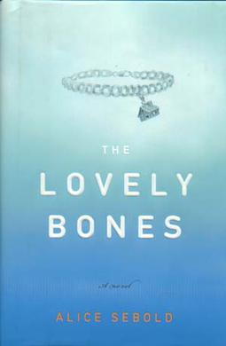

Crime novel
The Godfather
A searing portrayal of the Mafia underworld, The Godfather introduced readers to the first family of American crime fiction, the Corleones, and their powerful legacy of tradition, blood, and honor. The seduction of power, the pitfalls of greed, and the allegiance to family—these are the themes that have resonated with millions of readers around the world and made The Godfather the definitive novel of the violent subculture that, steeped in intrigue and controversy, remains indelibly etched in our collective consciousness. [ 4.3\5 ]
The lovely bones
"My name was Salmon, like the fish; first name, Susie. I was fourteen when I was murdered on December 6, 1973." So begins the story of Susie Salmon, who is adjusting to her new home in heaven, a place that is not at all what she expected, even as she is watching life on earth continue without her -- her friends trading rumors about her disappearance, her killer trying to cover his tracks, her grief-stricken family unraveling. Out of unspeakable tragedy and loss, The Lovely Bones succeeds, miraculously, in building a tale filled with hope, humor, suspense, even joy. [ 3.8\5 ]